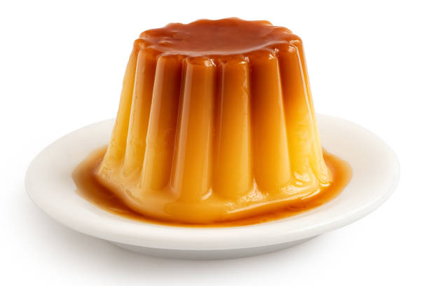
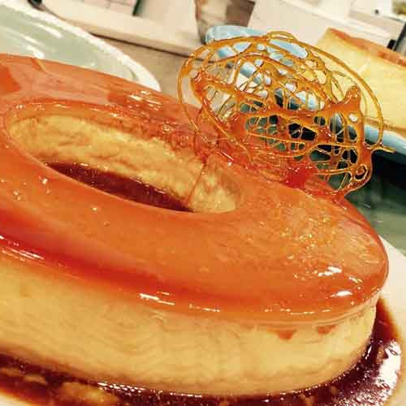

Bienvenido {{ user.get_username | upper }}...

Flan de caramelo
El flan (del francés flan) es un postre de origen francés elaborado con una natilla teniendo como ingredientes principales yemas de huevos, un poco de clara a veces, leche entera y azúcar que luego es refrigerado para obtener una textura cremosa y gelatinosa..

Flan de Caramelo Casero
Leche, huevos y azúcar es todo lo que necesitarás para preparar este flan de caramelo casero.

Ropa de Caramelo
Ropa de caramelo de crema con salsa de caramelo en plato.

Flan Tradicional
Este lindo Flan Tradicional tiene sabores sencillos pero tentadores. Es perfecto para reuniones u ocasiones especiales con la familia.